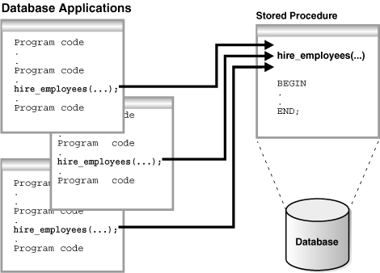
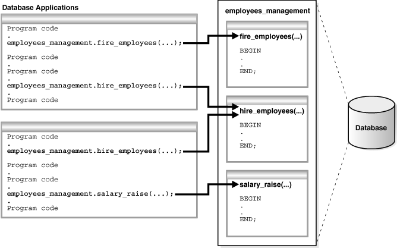
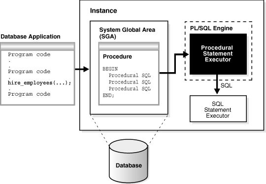
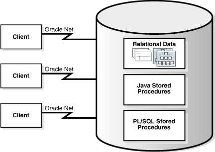
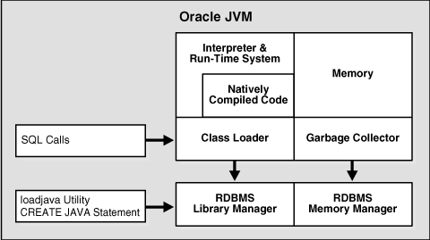

9 Server-Side Programming: PL/SQL and Java
SQL explains the Structured Query Language (SQL) language and how the database processes SQL statements. This chapter explains how Procedural Language/SQL (PL/SQL) or Java programs stored in the database can use SQL.
This chapter includes the following topics:
- Introduction to Server-Side Programming
In a nonprocedural language such as SQL, the set of data to be operated on is specified, but not the operations to be performed or the manner in which they are to be carried out. - Overview of PL/SQL
PL/SQL provides a server-side, stored procedural language that is easy-to-use, seamless with SQL, robust, portable, and secure. You can access and manipulate database data using procedural objects called PL/SQL units. - Overview of Java in Oracle Database
Java has emerged as the object-oriented programming language of choice. - Overview of Triggers
A database trigger is a compiled stored program unit, written in either PL/SQL or Java, that Oracle Database invokes ("fires") automatically in certain situations.
See Also:
"SQL" for an overview of the SQL language
Parent topic: Oracle Data Access
Introduction to Server-Side Programming
In a nonprocedural language such as SQL, the set of data to be operated on is specified, but not the operations to be performed or the manner in which they are to be carried out.
In a procedural language program, most statement execution depends on previous or subsequent statements and on control structures, such as loops or conditional branches, that are not available in SQL. For an illustration of the difference between procedural and nonprocedural languages, suppose that the following SQL statement queries the employees table:
SELECT employee_id, department_id, last_name, salary FROM employees;
The preceding statement requests data, but does not apply logic to the data. However, suppose you want an application to determine whether each employee in the data set deserves a raise based on salary and department performance. A necessary condition of a raise is that the employee did not receive more than three raises in the last five years. If a raise is called for, then the application must adjust the salary and email the manager; otherwise, the application must update a report.
The problem is how procedural database applications requiring conditional logic and program flow control can use SQL. The basic development approaches are as follows:
-
Use client-side programming to embed SQL statements in applications written in procedural languages such as C, C++, or Java
You can place SQL statements in source code and submit it to a precompiler or Java translator before compilation. Alternatively, you can eliminate the precompilation step and use an API such as Java Database Connectivity (JDBC) or Oracle Call Interface (OCI) to enable the application to interact with the database.
-
Use server-side programming to develop data logic that resides in the database
An application can explicitly invoke stored subprograms (procedures and functions), written in PL/SQL (pronounced P L sequel) or Java. You can also create a trigger, which is named program unit that is stored in the database and invoked in response to a specified event.
This chapter explains the second approach. The principal benefit of server-side programming is that functionality built into the database can be deployed anywhere. The database and not the application determines the best way to perform tasks on a given operating system. Also, subprograms increase scalability by centralizing application processing on the server, enabling clients to reuse code. Because subprogram calls are quick and efficient, a single call can start a compute-intensive stored subprogram, reducing network traffic.
You can use the following languages to store data logic in Oracle Database:
-
PL/SQL
PL/SQL is the Oracle Database procedural extension to SQL. PL/SQL is integrated with the database, supporting all Oracle SQL statements, functions, and data types. Applications written in database APIs can invoke PL/SQL stored subprograms and send PL/SQL code blocks to the database for execution.
-
Java
Oracle Database also provides support for developing, storing, and deploying Java applications. Java stored subprograms run in the database and are independent of programs that run in the middle tier. Java stored subprograms interface with SQL using a similar execution model to PL/SQL.
See Also:
-
"Client-Side Database Programming" to learn about embedding SQL with precompilers and APIs
-
Oracle Database Get Started with Oracle Database Development for an introduction to Oracle Database application development
-
Oracle Database Development Guide to learn how to choose a programming environment
Parent topic: Server-Side Programming: PL/SQL and Java
Overview of PL/SQL
PL/SQL provides a server-side, stored procedural language that is easy-to-use, seamless with SQL, robust, portable, and secure. You can access and manipulate database data using procedural objects called PL/SQL units.
PL/SQL units generally are categorized as follows:
-
A PL/SQL subprogram is a PL/SQL block that is stored in the database and can be called by name from an application. When you create a subprogram, the database parses the subprogram and stores its parsed representation in the database. You can declare a subprogram as a procedure or a function.
-
A PL/SQL anonymous block is a PL/SQL block that appears in your application and is not named or stored in the database. In many applications, PL/SQL blocks can appear wherever SQL statements can appear.
The PL/SQL compiler and interpreter are embedded in Oracle SQL Developer, giving developers a consistent and leveraged development model on both client and server. Also, PL/SQL stored procedures can be called from several database clients, such as Pro*C, JDBC, ODBC, or OCI, and from Oracle Reports and Oracle Forms.
- PL/SQL Subprograms
A PL/SQL subprogram is a named PL/SQL block that permits the caller to supply parameters that can be input only, output only, or input and output values. - PL/SQL Packages
A PL/SQL package is a group of related subprograms, along with the cursors and variables they use, stored together in the database for continued use as a unit. Packaged subprograms can be called explicitly by applications or users. - PL/SQL Anonymous Blocks
A PL/SQL anonymous block is an unnamed, nonpersistent PL/SQL unit. - PL/SQL Language Constructs
PL/SQL blocks can include a variety of different PL/SQL language constructs. - PL/SQL Collections and Records
Many programming techniques use collection types such as arrays, bags, lists, nested tables, sets, and trees. - How PL/SQL Runs
PL/SQL supports both interpreted execution and native execution.
See Also:
-
Oracle Database PL/SQL Language Reference for complete information about PL/SQL, including packages
Parent topic: Server-Side Programming: PL/SQL and Java
PL/SQL Subprograms
A PL/SQL subprogram is a named PL/SQL block that permits the caller to supply parameters that can be input only, output only, or input and output values.
A subprogram solves a specific problem or performs related tasks and serves as a building block for modular, maintainable database applications. A subprogram is either a PL/SQL procedure or a PL/SQL function. Procedures and functions are identical except that functions always return a single value to the caller, whereas procedures do not. The term PL/SQL procedure in this chapter refers to either a procedure or a function.
- Advantages of PL/SQL Subprograms
Server-side programming has many advantages over client-side programming. - Creation of PL/SQL Subprograms
A standalone stored subprogram is a subprogram created at the schema level with theCREATE PROCEDUREorCREATE FUNCTIONstatement. Subprograms defined in a package are called package subprograms and are considered a part of the package. - Execution of PL/SQL Subprograms
Users can execute a subprogram interactively in multiple ways.
See Also:
-
Pro*C/C++ Developer's Guide and Pro*COBOL Developer's Guide to learn about stored procedures in these languages
Parent topic: Overview of PL/SQL
Advantages of PL/SQL Subprograms
Server-side programming has many advantages over client-side programming.
Advantages include:
-
Improved performance
-
The amount of information that an application must send over a network is small compared with issuing individual SQL statements or sending the text of an entire PL/SQL block to Oracle Database, because the information is sent only once and thereafter invoked when it is used.
-
The compiled form of a procedure is readily available in the database, so no compilation is required at execution time.
-
If the procedure is present in the shared pool of the SGA, then the database need not retrieve it from disk and can begin execution immediately.
-
-
Memory allocation
Because stored procedures take advantage of the shared memory capabilities of Oracle Database, it must load only a single copy of the procedure into memory for execution by multiple users. Sharing code among users results in a substantial reduction in database memory requirements for applications.
-
Improved productivity
Stored procedures increase development productivity. By designing applications around a common set of procedures, you can avoid redundant coding. For example, you can write procedures to manipulate rows in the
employeestable. Any application can call these procedures without requiring SQL statements to be rewritten. If the methods of data management change, then only the procedures must be modified, not the applications that use the procedures.Stored procedures are perhaps the best way to achieve code reuse. Because any client application written in any language that connects to the database can invoke stored procedures, they provide maximum code reuse in all environments.
-
Integrity
Stored procedures improve the integrity and consistency of your applications. By developing applications around a common group of procedures, you reduce the likelihood of coding errors.
For example, you can test a subprogram to guarantee that it returns an accurate result and, after it is verified, reuse it in any number of applications without retesting. If the data structures referenced by the procedure are altered, then you must only recompile the procedure. Applications that call the procedure do not necessarily require modifications.
-
Security with definer's rights procedures
Stored procedures can help enforce data security. A definer's rights PL/SQL procedure executes with the privilege of its owner, not its current user. Thus, you can restrict the database tasks that users perform by allowing them to access data only through procedures and functions that run with the definer's privileges.
For example, you can grant users access to a procedure that updates a table but not grant access to the table itself. When a user invokes the procedure, it runs with the privileges of its owner. Users who have only the privilege to run the procedure (but not privileges to query, update, or delete from the underlying tables) can invoke the procedure but not manipulate table data in any other way.
-
Inherited privileges and schema context with invoker's rights procedures
An invoker's rights PL/SQL procedure executes in the current user's schema with the current user's privileges. In other words, an invoker's rights procedure is not tied to a particular user or schema. Invoker's rights procedures make it easy for application developers to centralize application logic, even when the underlying data is divided among user schemas.
For example, an
hr_manageruser who runs an update procedure on thehr.employeestable can update salaries, whereas anhr_clerkwho runs the same procedure is restricted to updating address data.
See Also:
-
Oracle Database PL/SQL Language Reference for an overview of PL/SQL subprograms
-
Oracle Database Security Guide to learn more about definer's and invoker's rights
Parent topic: PL/SQL Subprograms
Creation of PL/SQL Subprograms
A standalone stored subprogram is a subprogram created at the schema level with the CREATE PROCEDURE or CREATE FUNCTION statement. Subprograms defined in a package are called package subprograms and are considered a part of the package.
The database stores subprograms in the data dictionary as schema objects. A subprogram has a specification, which includes descriptions of any parameters, and a body.
Example 9-1 PL/SQL Procedure
This example shows part of a creation statement for the standalone PL/SQL procedurehire_employees. The procedure inserts a row into the employees table.CREATE PROCEDURE hire_employees
(p_last_name VARCHAR2, p_job_id VARCHAR2, p_manager_id NUMBER,
p_hire_date DATE, p_salary NUMBER, p_commission_pct NUMBER,
p_department_id NUMBER)
IS
BEGIN
.
.
.
INSERT INTO employees (employee_id, last_name, job_id, manager_id, hire_date,
salary, commission_pct, department_id)
VALUES (emp_sequence.NEXTVAL, p_last_name, p_job_id, p_manager_id,
p_hire_date, p_salary, p_commission_pct, p_department_id);
.
.
.
END;See Also:
-
Oracle Database Get Started with Oracle Database Development to learn how to create subprograms
-
Oracle Database PL/SQL Language Reference to learn about the
CREATE PROCEDUREstatement
Parent topic: PL/SQL Subprograms
Execution of PL/SQL Subprograms
Users can execute a subprogram interactively in multiple ways.
The options are:
-
Using an Oracle tool, such as SQL*Plus or SQL Developer
-
Calling it explicitly in the code of a database application, such as an Oracle Forms or precompiler application
-
Calling it explicitly in the code of another procedure or trigger
The following graphic shows different database applications calling hire_employees.
Figure 9-1 Multiple Executions of a Stored Procedure

Description of "Figure 9-1 Multiple Executions of a Stored Procedure"
Alternatively, a privileged user can use Oracle Enterprise Manager or SQL*Plus to run the hire_employees procedure using a statement such as the following:
EXECUTE hire_employees ('TSMITH', 'CLERK', 1037, SYSDATE, 500, NULL, 20);
The preceding statement inserts a new record for TSMITH in the employees table.
A stored procedure depends on the objects referenced in its body. The database automatically tracks and manages these dependencies. For example, if you alter the definition of the employees table referenced by the hire_employees procedure in a manner that would affect this procedure, then the procedure must be recompiled to validate that it still works as designed. Usually, the database automatically administers such dependency management.
See Also:
-
"Tools for Database Developers" to learn more about SQL*Plus and SQL Developer
-
"Client-Side Database Programming" to learn more about precompilers
-
Oracle Database PL/SQL Language Reference to learn how to use PL/SQL subprograms
-
SQL*Plus User's Guide and Reference to learn about the
EXECUTEcommand
Parent topic: PL/SQL Subprograms
PL/SQL Packages
A PL/SQL package is a group of related subprograms, along with the cursors and variables they use, stored together in the database for continued use as a unit. Packaged subprograms can be called explicitly by applications or users.
Oracle Database includes many supplied packages that extend database functionality and provide PL/SQL access to SQL features. For example, the UTL_HTTP package enables HTTP callouts from PL/SQL and SQL to access data on the Internet or to call Oracle Web Server Cartridges. You can use the supplied packages when creating applications or as a source of ideas when creating your own stored procedures.
- Advantages of PL/SQL Packages
PL/SQL packages provide a number of advantages to the application developer. - Creation of PL/SQL Packages
You create a package in two parts: the specification and the body. The package specification declares all public constructs of the package, whereas the package body defines all constructs (public and private) of the package. - Execution of PL/SQL Package Subprograms
Database triggers, stored subprograms, 3GL application programs, and Oracle tools can reference package contents.
Parent topic: Overview of PL/SQL
Advantages of PL/SQL Packages
PL/SQL packages provide a number of advantages to the application developer.
Advantages include:
-
Encapsulation
Packages enable you to encapsulate or group stored procedures, variables, data types, and so on in a named, stored unit. Encapsulation provides better organization during development and also more flexibility. You can create specifications and reference public procedures without actually creating the package body. Encapsulation simplifies privilege management. Granting the privilege for a package makes package constructs accessible to the grantee.
-
Data security
The methods of package definition enable you to specify which variables, cursors, and procedures are public and private. Public means that it is directly accessible to the user of a package. Private means that it is hidden from the user of a package.
For example, a package can contain 10 procedures. You can define the package so that only three procedures are public and therefore available for execution by a user of the package. The remaining procedures are private and can only be accessed by the procedures within the package. Do not confuse public and private package variables with grants to
PUBLIC. -
Better performance
An entire package is loaded into memory in small chunks when a procedure in the package is called for the first time. This load is completed in one operation, as opposed to the separate loads required for standalone procedures. When calls to related packaged procedures occur, no disk I/O is needed to run the compiled code in memory.
A package body can be replaced and recompiled without affecting the specification. Consequently, schema objects that reference a package's constructs (always through the specification) need not be recompiled unless the package specification is also replaced. By using packages, unnecessary recompilations can be minimized, resulting in less impact on overall database performance.
Parent topic: PL/SQL Packages
Creation of PL/SQL Packages
You create a package in two parts: the specification and the body. The package specification declares all public constructs of the package, whereas the package body defines all constructs (public and private) of the package.
The following example shows part of a statement that creates the package specification for employees_management, which encapsulates several subprograms used to manage an employee database. Each part of the package is created with a different statement.
CREATE PACKAGE employees_management AS
FUNCTION hire_employees (last_name VARCHAR2, job_id VARCHAR2, manager_id NUMBER,
salary NUMBER, commission_pct NUMBER, department_id NUMBER) RETURN NUMBER;
PROCEDURE fire_employees(employee_id NUMBER);
PROCEDURE salary_raise(employee_id NUMBER, salary_incr NUMBER);
.
.
.
no_sal EXCEPTION;
END employees_management;
The specification declares the function hire_employees, the procedures fire_employees and salary_raise, and the exception no_sal. All of these public program objects are available to users who have access to the package.
The CREATE PACKAGE BODY statement defines objects declared in the specification. The package body must be created in the same schema as the package. After creating the package, you can develop applications that call any of these public procedures or functions or raise any of the public exceptions of the package.
See Also:
Oracle Database PL/SQL
Language Reference to learn about the CREATE PACKAGE statement
Parent topic: PL/SQL Packages
Execution of PL/SQL Package Subprograms
Database triggers, stored subprograms, 3GL application programs, and Oracle tools can reference package contents.
The following graphic shows database applications invoking procedures and functions in the employees_management package.
Figure 9-2 Calling Subprograms in a PL/SQL Package

Description of "Figure 9-2 Calling Subprograms in a PL/SQL Package"
Database applications explicitly call packaged procedures as necessary. After being granted the privileges for the employees_management package, a user can explicitly run any of the procedures contained in it. For example, SQL*Plus can issue the following statement to run the hire_employees package procedure:
EXECUTE employees_management.hire_employees ('TSMITH', 'CLERK', 1037, SYSDATE, 500, NULL, 20);See Also:
-
Oracle Database PL/SQL Language Reference for an introduction to PL/SQL packages
-
Oracle Database Development Guide to learn how to code PL/SQL packages
Parent topic: PL/SQL Packages
PL/SQL Anonymous Blocks
A PL/SQL anonymous block is an unnamed, nonpersistent PL/SQL unit.
Typical uses for anonymous blocks include:
-
Initiating calls to subprograms and package constructs
-
Isolating exception handling
-
Managing control by nesting code within other PL/SQL blocks
Anonymous blocks do not have the code reuse advantages of stored subprograms. Table 9-1 summarizes the differences between the two types of PL/SQL units.
Table 9-1 Differences Between Anonymous Blocks and Subprograms
| Is the PL/SQL Unit ... | Anonymous Blocks | Subprograms |
|---|---|---|
|
Specified with a name? |
No |
Yes |
|
Compiled with every reuse? |
No |
No |
|
Stored in the database? |
No |
Yes |
|
Invocable by other applications? |
No |
Yes |
|
Capable of returning bind variable values? |
Yes |
Yes |
|
Capable of returning function values? |
No |
Yes |
|
Capable of accepting parameters? |
No |
Yes |
An anonymous block consists of an optional declarative part, an executable part, and one or more optional exception handlers. The following sample anonymous block selects an employee last name into a variable and prints the name:
DECLARE
v_lname VARCHAR2(25);
BEGIN
SELECT last_name
INTO v_lname
FROM employees
WHERE employee_id = 101;
DBMS_OUTPUT.PUT_LINE('Employee last name is '||v_lname);
END;
Oracle Database compiles the PL/SQL block and places it in the shared pool of the SGA, but it does not store the source code or compiled version in the database for reuse beyond the current instance. Unlike triggers, an anonymous block is compiled each time it is loaded into memory. Shared SQL allows anonymous PL/SQL blocks in the shared pool to be reused and shared until they are flushed out of the shared pool.
See Also:
Oracle Database Development Guide to learn more about anonymous PL/SQL blocks
Parent topic: Overview of PL/SQL
PL/SQL Language Constructs
PL/SQL blocks can include a variety of different PL/SQL language constructs.
These constructs including the following:
-
Variables and constants
You can declare these constructs within a procedure, function, or package. You can use a variable or constant in a SQL or PL/SQL statement to capture or provide a value when one is needed.
-
Cursors
You can declare a cursor explicitly within a procedure, function, or package to facilitate record-oriented processing of Oracle Database data. The PL/SQL engine can also declare cursors implicitly.
-
Exceptions
PL/SQL lets you explicitly handle internal and user-defined error conditions, called exceptions, that arise during processing of PL/SQL code.
PL/SQL can run dynamic SQL statements whose complete text is not known until run time. Dynamic SQL statements are stored in character strings that are entered into, or built by, the program at run time. This technique enables you to create general purpose procedures. For example, you can create a procedure that operates on a table whose name is not known until run time.
See Also:
-
Oracle Database PL/SQL Packages and Types Reference for details about dynamic SQL
-
Oracle Database PL/SQL Packages and Types Reference to learn how to use dynamic SQL in the
DBMS_SQLpackage
Parent topic: Overview of PL/SQL
PL/SQL Collections and Records
Many programming techniques use collection types such as arrays, bags, lists, nested tables, sets, and trees.
To support collection techniques in database applications, PL/SQL provides the data types TABLE and VARRAY. These types enable you to declare associative arrays, nested tables, and variable-size arrays.
- Collections
A PL/SQL collection is an ordered group of elements, all of the same type. - Records
A PL/SQL record is a composite variable that can store data values of different types, similar to a struct type in C, C++, or Java. Records are useful for holding data from table rows, or certain columns from table rows.
Parent topic: Overview of PL/SQL
Collections
A PL/SQL collection is an ordered group of elements, all of the same type.
Each element has a unique subscript that determines its position in the collection. To create a collection, you first define a collection type, and then declare a variable of that type.
Collections work like the arrays found in most third-generation programming languages. Also, collections can be passed as parameters. So, you can use them to move columns of data into and out of database tables or between client-side applications and stored subprograms.
Parent topic: PL/SQL Collections and Records
Records
A PL/SQL record is a composite variable that can store data values of different types, similar to a struct type in C, C++, or Java. Records are useful for holding data from table rows, or certain columns from table rows.
Suppose you have data about an employee such as name, salary, and hire date. These items are dissimilar in type but logically related. A record containing a field for each item lets you treat the data as a logical unit.
You can use the %ROWTYPE attribute to declare a record that represents a table row or row fetched from a cursor. With user-defined records, you can declare your own fields.
See Also:
Oracle Database PL/SQL Language Reference to learn how to use PL/SQL records
Parent topic: PL/SQL Collections and Records
How PL/SQL Runs
PL/SQL supports both interpreted execution and native execution.
In interpreted execution, PL/SQL source code is compiled into a so-called bytecode representation. A portable virtual computer implemented as part of Oracle Database runs this bytecode.
Native execution offers the best performance on computationally intensive units. In this case, the source code of PL/SQL units is compiled directly to object code for the given platform. This object code is linked into Oracle Database.
The PL/SQL engine defines, compiles, and runs PL/SQL units. This engine is a special component of many Oracle products, including Oracle Database. While many Oracle products have PL/SQL components, this topic specifically covers the PL/SQL units that can be stored in Oracle Database and processed using Oracle Database PL/SQL engine. The documentation for each Oracle tool describes its PL/SQL capabilities.
The following graphic illustrates the PL/SQL engine contained in Oracle Database.
Figure 9-3 The PL/SQL Engine and Oracle Database

Description of "Figure 9-3 The PL/SQL Engine and Oracle Database"
The PL/SQL unit is stored in a database. When an application calls a stored procedure, the database loads the compiled PL/SQL unit into the shared pool in the system global area (SGA). The PL/SQL and SQL statement executors work together to process the statements in the procedure.
You can call a stored procedure from another PL/SQL block, which can be either an anonymous block or another stored procedure. For example, you can call a stored procedure from Oracle Forms.
A PL/SQL procedure executing on Oracle Database can call an external procedure or function written in the C programming language and stored in a shared library. The C routine runs in a separate address space from that of Oracle Database.
See Also:
-
"Shared Pool " to learn more about the purpose and contents of the shared pool
-
Oracle Database PL/SQL Language Reference to learn about PL/SQL architecture
-
Oracle Database Development Guide to learn more about external procedures
Parent topic: Overview of PL/SQL
Overview of Java in Oracle Database
Java has emerged as the object-oriented programming language of choice.
Java includes the following features:
-
A Java Virtual Machine (JVM), which provides the basis for platform independence
-
Automated storage management techniques, such as garbage collection
-
Language syntax that borrows from C and enforces strong typing
Note:
This chapter assumes that you have some familiarity with the Java language.
The database provides Java programs with a dynamic data-processing engine that supports complex queries and multiple views of data. Client requests are assembled as data queries for immediate processing. Query results are generated dynamically.
The combination of Java and Oracle Database helps you create component-based, network-centric applications that can be easily updated as business needs change. In addition, you can move applications and data stores off the desktop and onto intelligent networks and network-centric servers. More importantly, you can access these applications and data stores from any client device.
The following figure shows a traditional two-tier, client/server configuration in which clients call Java stored procedures in the same way that they call PL/SQL subprograms.
Figure 9-4 Two-Tier Client/Server Configuration

Description of "Figure 9-4 Two-Tier Client/Server Configuration"
- Overview of the Java Virtual Machine (JVM)
A JVM is a virtual processor that runs compiled Java code. - Java Programming Environment
Oracle furnishes enterprise application developers with an end-to-end Java solution for creating, deploying, and managing Java applications.
See Also:
Oracle Database Get Started with Java Development for an introduction to using Java with Oracle Database
Parent topic: Server-Side Programming: PL/SQL and Java
Overview of the Java Virtual Machine (JVM)
A JVM is a virtual processor that runs compiled Java code.
Java source code compiles to low-level machine instructions, known as bytecodes, that are platform independent. The Java bytecodes are interpreted through the JVM into platform-dependent actions.
- Overview of Oracle JVM
The Oracle JVM is a standard, Java-compatible environment that runs any pure Java application. It is compatible with the JLS and the JVM specifications. - Main Components of Oracle JVM
Oracle JVM runs in the same process space and address space as the database kernel by sharing its memory heaps and directly accessing its relational data. This design optimizes memory use and increases throughput.
Parent topic: Overview of Java in Oracle Database
Overview of Oracle JVM
The Oracle JVM is a standard, Java-compatible environment that runs any pure Java application. It is compatible with the JLS and the JVM specifications.
The Oracle JVM supports the standard Java binary format and APIs. In addition, Oracle Database adheres to standard Java language semantics, including dynamic class loading at run time.
The following figure illustrates how Oracle Java applications reside on top of the Java core class libraries, which reside on top of the Oracle JVM. Because the Oracle Java support system is located within the database, the JVM interacts with database libraries, instead of directly interacting with the operating system.
Unlike other Java environments, Oracle JVM is embedded within Oracle Database. Some important differences exist between Oracle JVM and typical client JVMs. For example, in a standard Java environment, you run a Java application through the interpreter by issuing the following command on the command line, where classname is the name of the class that the JVM interprets first:
java classname
The preceding command causes the application to run within a process on your operating system. However, if you are not using the command-line interface, then you must load the application into the database, publish the interface, and then run the application within a database data dictionary.
See Also:
See Oracle Database Java Developer’s Guide for a description of other differences between the Oracle JVM and typical client JVMs
Parent topic: Overview of the Java Virtual Machine (JVM)
Main Components of Oracle JVM
Oracle JVM runs in the same process space and address space as the database kernel by sharing its memory heaps and directly accessing its relational data. This design optimizes memory use and increases throughput.
Oracle JVM provides a run-time environment for Java objects. It fully supports Java data structures, method dispatch, exception handling, and language-level threads. It also supports all the core Java class libraries, including java.lang, java.io, java.net, java.math, and java.util.
The following illustration shows the main components of Oracle JVM.
Figure 9-6 Main Components of Oracle JVM

Description of "Figure 9-6 Main Components of Oracle JVM"
Oracle JVM embeds the standard Java namespace in the database schemas. This feature lets Java programs access Java objects stored in Oracle Database and application servers across the enterprise.
In addition, Oracle JVM is tightly integrated with the scalable, shared memory architecture of the database. Java programs use call, session, and object lifetimes efficiently without user intervention. Consequently, Oracle JVM and middle-tier Java business objects can be scaled, even when they have session-long state.
See Also:
Oracle Database Java Developer’s Guide for a description of the main components of Oracle JVM
Parent topic: Overview of the Java Virtual Machine (JVM)
Java Programming Environment
Oracle furnishes enterprise application developers with an end-to-end Java solution for creating, deploying, and managing Java applications.
The solution consists of client-side and server-side programmatic interfaces, tools to support Java development, and a Java Virtual Machine integrated with Oracle Database. All these products are compatible with Java standards.
The Java programming environment consists of the following additional features:
-
Java stored procedures as the Java equivalent and companion for PL/SQL. Java stored procedures are tightly integrated with PL/SQL. You can call Java stored procedures from PL/SQL packages and procedures from Java stored procedures.
-
The JDBC and SQLJ programming interfaces for accessing SQL data.
-
Tools and scripts that assist in developing, loading, and managing classes.
- Java Stored Procedures
A Java stored procedure is a Java method published to SQL and stored in the database. - Java and PL/SQL Integration
You can call existing PL/SQL programs from Java and Java programs from PL/SQL. This solution protects and leverages your PL/SQL and Java code.
Parent topic: Overview of Java in Oracle Database
Java Stored Procedures
A Java stored procedure is a Java method published to SQL and stored in the database.
Like a PL/SQL subprogram, a Java procedure can be invoked directly with products like SQL*Plus or indirectly with a trigger. You can access it from any Oracle Net client—OCI, precompiler, or JDBC.
To publish Java methods, you write call specifications, which map Java method names, parameter types, and return types to their SQL counterparts. When called by client applications, a Java stored procedure can accept arguments, reference Java classes, and return Java result values.
Applications calling the Java method by referencing the name of the call specification. The run-time system looks up the call specification definition in the Oracle data dictionary and runs the corresponding Java method.
In addition, you can use Java to develop powerful programs independently of PL/SQL. Oracle Database provides a fully compliant implementation of the Java programming language and JVM.
See Also:
Oracle Database Java Developer’s Guide explains how to write stored procedures in Java, how to access them from PL/SQL, and how to access PL/SQL functionality from Java
Parent topic: Java Programming Environment
Java and PL/SQL Integration
You can call existing PL/SQL programs from Java and Java programs from PL/SQL. This solution protects and leverages your PL/SQL and Java code.
Oracle Database offers two different approaches for accessing SQL data from Java: JDBC and SQLJ. JDBC is available on both client and server, whereas SQLJ is available only on the client.
- JDBC Drivers
JDBC is a database access protocol that enables you to connect to a database and run SQL statements and queries to the database. - SQLJ
SQLJ is an ANSI standard for embedding SQL statements in Java programs. You can use client-side SQLJ programs. In addition, you can combine SQLJ programs with JDBC.
Parent topic: Java Programming Environment
JDBC Drivers
JDBC is a database access protocol that enables you to connect to a database and run SQL statements and queries to the database.
The core Java class libraries provide only one JDBC API, java.sql. However, JDBC is designed to enable vendors to supply drivers that offer the necessary specialization for a particular database. Oracle provides the distinct JDBC drivers shown in the following table.
Table 9-2 JDBC Drivers
| Driver | Description |
|---|---|
|
JDBC Thin driver |
You can use the JDBC Thin driver to write pure Java applications and applets that access Oracle SQL data. The JDBC Thin driver is especially well-suited for Web-based applications and applets, because you can dynamically download it from a Web page, similar to any other Java applet. |
|
JDBC OCI driver |
The JDBC OCI driver accesses Oracle-specific native code, that is, non-Java code, and libraries on the client or middle tier, providing a performance boost compared to the JDBC Thin driver, at the cost of significantly larger size and client-side installation. |
|
JDBC server-side internal driver |
Oracle Database uses the server-side internal driver when the Java code runs on the server. It allows Java applications running in Oracle JVM on the server to access locally defined data, that is, data on the same system and in the same process, with JDBC. It provides a performance boost, because of its ability to use the underlying Oracle RDBMS libraries directly, without the overhead of an intervening network connection between the Java code and SQL data. By supporting the same Java-SQL interface on the server, Oracle Database does not require you to rework code when deploying it. |
See Also:
Parent topic: Java and PL/SQL Integration
SQLJ
SQLJ is an ANSI standard for embedding SQL statements in Java programs. You can use client-side SQLJ programs. In addition, you can combine SQLJ programs with JDBC.
Note:
Starting with Oracle Database 12c release 2 (12.2), Oracle Database does not support running server-side SQLJ code, including running stored procedures, functions, and triggers in the database environment.
SQLJ provides a simple, but powerful, way to develop client-side and middle-tier applications that access databases from Java. A developer writes a program using SQLJ and then uses the SQLJ translator to translate embedded SQL to pure JDBC-based Java code. At run time, the program can communicate with multi-vendor databases using standard JDBC drivers.
The following example shows a simple SQLJ executable statement:
String name;
#sql { SELECT first_name INTO :name FROM employees WHERE employee_id=112 };
System.out.println("Name is " + name + ", employee number = " + employee_id);
See Also:
Parent topic: Java and PL/SQL Integration
Overview of Triggers
A database trigger is a compiled stored program unit, written in either PL/SQL or Java, that Oracle Database invokes ("fires") automatically in certain situations.
A trigger fires whenever one of the following operations occurs:
-
DML statements on a particular table or view, issued by any user
DML statements modify data in schema objects. For example, inserting and deleting rows are DML operations.
-
DDL statements issued either by a particular user or any user
DDL statements define schema objects. For example, creating a table and adding a column are DDL operations.
-
Database events
User login or logoff, errors, and database startup or shutdown are events that can invoke triggers.
Triggers are schema objects that are similar to subprograms but differ in the way they are invoked. A subprogram is explicitly run by a user, application, or trigger. Triggers are implicitly invoked by the database when a triggering event occurs.
- Advantages of Triggers
The correct use of triggers enables you to build and deploy applications that are more robust and that use the database more effectively. - Types of Triggers
Triggers can be categorized according to their means of invocation and the type of actions they perform. - Timing for Triggers
You can define the trigger timing—whether the trigger action is to be run before or after the triggering statement. - Creation of Triggers
TheCREATE TRIGGERstatement creates or replaces a database trigger. - Execution of Triggers
Oracle Database executes a trigger internally using the same steps as for subprogram execution. - Storage of Triggers
Oracle Database stores PL/SQL triggers in compiled form in a database schema, just like PL/SQL stored procedures.
See Also:
-
"Overview of SQL Statements" to learn about DML and DDL
Parent topic: Server-Side Programming: PL/SQL and Java
Advantages of Triggers
The correct use of triggers enables you to build and deploy applications that are more robust and that use the database more effectively.
You can use triggers to:
-
Automatically generate derived column values
-
Prevent invalid transactions
-
Provide auditing and event logging
-
Record information about table access
You can use triggers to enforce low-level business rules common for all client applications. For example, several applications may access the employees table. If a trigger on this table ensures the format of inserted data, then this business logic does not need to be reproduced in every client. Because the trigger cannot be circumvented by the application, the business logic in the trigger is used automatically.
You can use both triggers and integrity constraints to define and enforce any type of integrity rule. However, Oracle strongly recommends that you only use triggers to enforce complex business rules not definable using an integrity constraint.
Excessive use of triggers can result in complex interdependencies that can be difficult to maintain in a large application. For example, when a trigger is invoked, a SQL statement within its trigger action potentially can fire other triggers, resulting in cascading triggers that can produce unintended effects.
See Also:
-
Oracle Database Get Started with Oracle Database Development
-
Oracle Database PL/SQL Language Reference for guidelines and restrictions when planning triggers for your application
Parent topic: Overview of Triggers
Types of Triggers
Triggers can be categorized according to their means of invocation and the type of actions they perform.
Oracle Database supports the following types of triggers:
-
Row triggers
A row trigger fires each time the table is affected by the triggering statement. For example, if a statement updates multiple rows, then a row trigger fires once for each row affected by the
UPDATE. If a triggering statement affects no rows, then a row trigger is not run. Row triggers are useful if the code in the trigger action depends on data provided by the triggering statement or rows that are affected. -
Statement triggers
A statement trigger is fired once on behalf of the triggering statement, regardless of the number of rows affected by the triggering statement. For example, if a statement deletes 100 rows from a table, a statement-level
DELETEtrigger is fired only once. Statement triggers are useful if the code in the trigger action does not depend on the data provided by the triggering statement or the rows affected. -
INSTEAD OFtriggersAn INSTEAD OF trigger is fired by Oracle Database instead of executing the triggering statement. These triggers are useful for transparently modifying views that cannot be modified directly through DML statements.
-
Event triggers
You can use triggers to publish information about database events to subscribers. Event triggers are divided into the following categories:
-
A system event trigger can be caused by events such as database instance startup and shutdown or error messages.
-
A user event trigger is fired because of events related to user logon and logoff, DDL statements, and DML statements.
-
Timing for Triggers
You can define the trigger timing—whether the trigger action is to be run before or after the triggering statement.
A simple trigger is a single trigger on a table that enables you to specify actions for exactly one of the following timing points:
-
Before the firing statement
-
Before each row affected by the firing statement
-
After each row affected by the firing statement
-
After the firing statement
For statement and row triggers, a BEFORE trigger can enhance security and enable business rules before making changes to the database. The AFTER trigger is ideal for logging actions.
A compound trigger can fire at multiple timing points. Compound triggers help program an approach in which the actions that you implement for various timing points share common data.
See Also:
Oracle Database PL/SQL Language Reference to learn about compound triggers
Parent topic: Overview of Triggers
Creation of Triggers
The CREATE TRIGGER statement creates or replaces a database trigger.
A PL/SQL trigger has the following general syntactic form:
CREATE TRIGGER trigger_name
triggering_statement
[trigger_restriction]
BEGIN
triggered_action;
END;
A PL/SQL trigger has the following basic components:
-
Trigger name
The name must be unique among other trigger names in the same schema. For example, the name may be
part_reorder_trigger. -
The trigger event or statement
A triggering event or statement is the SQL statement, database event, or user event that causes a trigger to be invoked. For example, a user updates a table.
-
Trigger restriction
A trigger restriction specifies a Boolean expression that must be
truefor the trigger to fire. For example, the trigger is not invoked unless the number of available parts is less than a present reorder amount. -
Triggered action
A triggered action is the procedure that contains the SQL statements and code to be run when a triggering statement is issued and the trigger restriction evaluates to true. For example, a user inserts a row into a pending orders table.
- Example: CREATE TRIGGER Statement
This example creates a trigger that fires when anINSERT,UPDATE, orDELETEstatement executes on a line items table. - Example: Invoking a Row-Level Trigger
In this scenario, a customer initiates two orders and adds and removes line items from the orders.
See Also:
-
Oracle Database Get Started with Oracle Database Development and Oracle Database PL/SQL Language Reference to learn how to create triggers
-
Oracle Database SQL Language Reference to learn about the
CREATE TRIGGERstatement
Parent topic: Overview of Triggers
Example: CREATE TRIGGER Statement
This example creates a trigger that fires when an INSERT, UPDATE, or DELETE statement executes on a line items table.
Suppose that you create the orders and lineitems tables with the following statements. The orders table contains a row for each unique order, whereas the lineitems table contains a row for each item in an order.
CREATE TABLE orders ( order_id NUMBER PRIMARY KEY, /* other attributes */ line_items_count NUMBER DEFAULT 0 ); CREATE TABLE lineitems ( order_id REFERENCES orders, seq_no NUMBER, /* other attributes */ CONSTRAINT lineitems PRIMARY KEY(order_id,seq_no) );
The following statement creates a sample trigger that automatically updates the orders table with the number of items in an order:
CREATE OR REPLACE TRIGGER lineitems_trigger
AFTER INSERT OR UPDATE OR DELETE ON lineitems
FOR EACH ROW
BEGIN
IF (INSERTING OR UPDATING)
THEN
UPDATE orders SET line_items_count = NVL(line_items_count,0)+1
WHERE order_id = :new.order_id;
END IF;
IF (DELETING OR UPDATING)
THEN
UPDATE orders SET line_items_count = NVL(line_items_count,0)-1
WHERE order_id = :old.order_id;
END IF;
END;
/
In lineitems_trigger, the triggering statement is an INSERT, UPDATE, or DELETE on the lineitems table. No triggering restriction exists. The trigger is invoked for each row changed. The trigger has access to the old and new column values of the current row affected by the triggering statement. Two correlation names exist for every column of the table being modified: the old value (:old), and the new value (:new). If a session updates or inserts rows in lineitems for an order, then after the action the trigger calculates the number of items in this order and updates the orders table with the count.
Parent topic: Creation of Triggers
Example: Invoking a Row-Level Trigger
In this scenario, a customer initiates two orders and adds and removes line items from the orders.
The scenario is based on the trigger created in Example: CREATE TRIGGER Statement.
Table 9-3 Row-Level Trigger Scenario
| SQL Statement | Triggered SQL Statement | Description |
|---|---|---|
SQL> INSERT INTO orders (order_id) VALUES (78); 1 row created. |
The customer creates an order with ID 78. At this point the customer has no items in the order. Because no action is performed on the |
|
SQL> INSERT INTO orders (order_id) VALUES (92); 1 row created. |
The customer creates a separate order with ID 92. At this point the customer has no items in the order. Because no action is performed on the |
|
SQL> INSERT INTO lineitems (order_id, seq_no) VALUES (78,1); 1 row created. |
UPDATE orders
SET line_items_count =
NVL(NULL,0)+1
WHERE order_id = 78; |
The customer adds an item to order 78. The |
SQL> INSERT INTO lineitems (order_id, seq_no) VALUES (78,2); 1 row created. |
UPDATE orders
SET line_items_count =
NVL(1,0)+1
WHERE order_id = 78;
|
The customer adds an additional item to order 78. The |
SQL> SELECT * FROM orders;
ORDER_ID LINE_ITEMS_COUNT
--------- ----------------
78 2
92 0 |
The customer queries the status of the two orders. Order 78 contains two items. Order 92 contains no items. |
|
SQL> SELECT * FROM lineitems;
ORDER_ID SEQ_NO
---------- ----------
78 1
78 2 |
The customer queries the status of the line items. Each item is uniquely identified by the order ID and the sequence number. |
|
SQL> UPDATE lineitems SET order_id = 92; 2 rows updated. |
UPDATE orders
SET line_items_count =
NVL(NULL,0)+1
WHERE order_id = 92;
UPDATE orders
SET line_items_count =
NVL(2,0)-1
WHERE order_id = 78;
UPDATE orders
SET line_items_count =
NVL(1,0)+1
WHERE order_id = 92;
UPDATE orders
SET line_items_count =
NVL(1,0)-1
WHERE order_id = 78; |
The customer moves the line items that were in order 78 to order 92. The Each time the trigger is invoked, both |
SQL> SELECT * FROM orders;
ORDER_ID LINE_ITEMS_COUNT
--------- ----------------
78 0
92 2 |
The customer queries the status of the two orders. The net effect is that the line item count for order 92 has increased from 0 to 2, whereas the count for order 78 has decreased from 2 to 0. |
|
SQL> SELECT * FROM lineitems;
ORDER_ID SEQ_NO
---------- ----------
92 1
92 2 |
The customer queries the status of the line items. Each item is uniquely identified by the order ID and the sequence number. |
|
SQL> DELETE FROM lineitems; 2 rows deleted. |
UPDATE orders
SET line_items_count =
NVL(2,0)-1
WHERE order_id = 92;
UPDATE orders
SET line_items_count =
NVL(1,0)-1
WHERE order_id = 92; |
The customer now removes all line items from all orders. The |
SQL> SELECT * FROM orders;
ORDER_ID LINE_ITEMS_COUNT
--------- ----------------
78 0
92 0
SQL> SELECT * FROM lineitems;
no rows selected |
The customer queries the status of the two orders. Neither order contains line items. The customer also queries the status of the line items. No items exist. |
Parent topic: Creation of Triggers
Execution of Triggers
Oracle Database executes a trigger internally using the same steps as for subprogram execution.
The only subtle difference is that a user account has the right to fire a trigger if it has the privilege to run the triggering statement. With this exception, the database validates and runs triggers the same way as stored subprograms.
See Also:
Oracle Database PL/SQL Language Reference to learn more about trigger execution
Parent topic: Overview of Triggers
Storage of Triggers
Oracle Database stores PL/SQL triggers in compiled form in a database schema, just like PL/SQL stored procedures.
When a CREATE TRIGGER statement commits, the compiled PL/SQL code is stored in the database. The shared pool removes the source code of the PL/SQL trigger.
The following graphic shows a database application with SQL statements that implicitly invoke PL/SQL triggers. The triggers are stored separately from their associated tables.
Java triggers are stored in the same manner as PL/SQL triggers. However, a Java trigger references Java code that was separately compiled with a CALL statement. Thus, creating a Java trigger involves creating Java code and creating the trigger that references this Java code.
See Also:
Oracle Database PL/SQL Language Reference to learn about compiling and storing triggers
Parent topic: Overview of Triggers